ост.Терапия
На этом волшебном острове мы собрали ваши переживания и превратили их в удивительные оригами. Каждое оригами — это отражение ваших эмоций, которое поможет вам глубже понять себя. Исследуя эти уникальные творения, вы сможете не только осознать свои чувства, но и найти пути к их разрешению.
Каждое оригами станет вашим проводником к внутреннему миру, а подходящий специалист поможет вам раскрыть все тайны, скрытые за этими бумажными шедеврами.
Депрессия
Тревожность
Потеря
Депрессия
Тревожность
Потеря
Депрессия
Тревожность
Потеря
ост.Комьюнити
Раздел «Комьюнити» на нашем сайте — это место, где каждый может найти поддержку и понимание. Здесь собрано дружное сообщество людей, которые сталкиваются с похожими проблемами и интересами.
Мы верим, что общение и обмен опытом помогают преодолеть трудности. Вы не одиноки в своих переживаниях, и вместе мы сможем создать атмосферу доверия и взаимопомощи.